ATELIER TÉRACRISTAL · LOT 02
Couronnes &
verre prismatique.
Les accessoires sont régénérés séparément du Pokémon. Le nouveau traitement de surface suit chaque silhouette native : facettes, réfraction locale, reflets blancs et dispersion colorée animés, sans modifier l’alpha ni la durée des actions.
19 typesModèles dessinés · non tous validés ni multidirectionnels
59 planches locales1416 variantes · 24 phases de lumière
55,953Planches SpriteCollab indexées · 12 testées à distance
01 / Les modèles de couronne
Feu : quatre vues cardinales. Eau : huit propositions d’angle. Les 17 autres types : une vue frontale chacun. Les bandes pendantes de la première génération Eau/Normal/Plante ont été reprises au générateur.
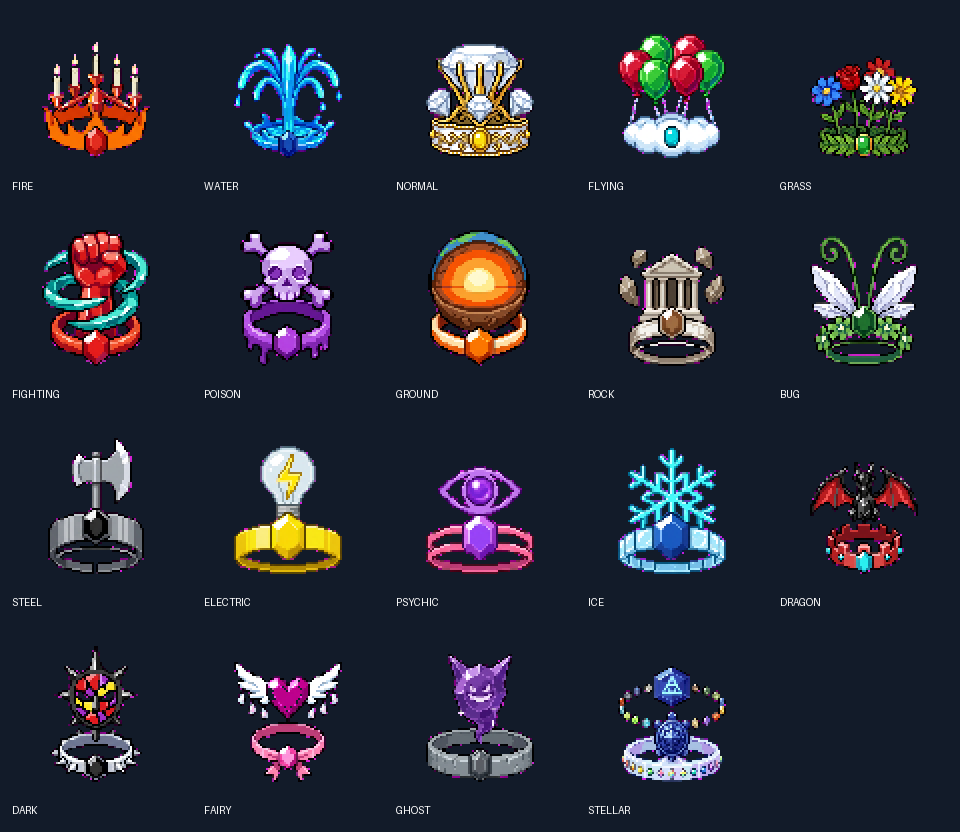
Ce ne sont pas 19 couronnes finalisées pour tous les sprites. Pas de tête ni de corps de Pokémon porteur dans ces accessoires ; les joyaux frontaux n’ont pas d’yeux. Les emblèmes propres aux types (crâne Poison, œil Psy, masque Ténèbres, fantôme Spectre) restent décoratifs. Le modèle Stellaire est refusé pour utilisation : statue non fidèle et nombre exact des ornements à reprendre. Le nombre de ballons Vol et les vues Eau doivent aussi être corrigés/vérifiés. Les nouveaux modèles n’écrasent pas les anciens réglages d’attache.
02 / Une surface, pas une aura
Nouveau modèle Feu et reflets réunis sur quatre formes locales, dans les quatre vues cardinales. Première pose Idle, largeur et assise de tête individualisées ; occultations cornes/oreilles encore provisoires.
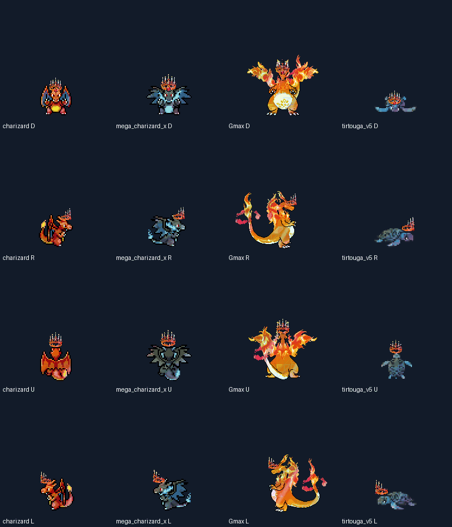
Comparaison sur douze silhouettes natives très différentes. À gauche : l’original. À droite : les reflets animés sur la même pose. Les planches complètes ont été traitées et vérifiées, pas seulement ces découpes de présentation.
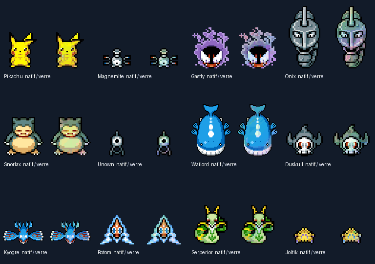
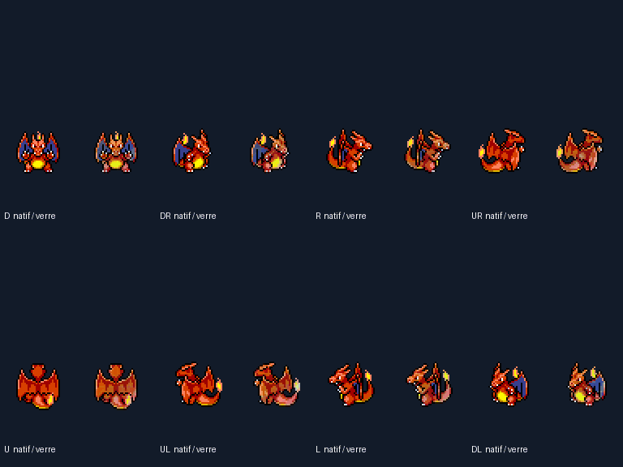
Le moteur de traitement ne contient pas de liste d’espèces : il accepte toute planche native répertoriée, à la demande. Cela ne signifie pas que les 55 953 planches ont toutes été calculées, ni que le shader est installé dans PMDO. Les tests réalisés portent sur six dossiers locaux et douze planches distantes. Intégration et rendu réel Ground/Dungeon toujours non testés.
Guide et commande pour traiter une autre planche · Couverture exacte · Contrôles locaux
03 / Carapagos — revue regroupée
Les 32 actions et 16 portraits déjà exportés sont réunis ici. Ce regroupement n’est pas compté comme une nouvelle production artistique. Les six originaux conservés sont inchangés ; les autres portraits et les sprites attendent encore leur validation artistique.
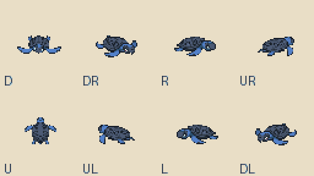
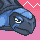
Angry
Original conservé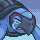
Crying
À valider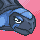
Determined
À valider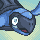
Dizzy
À valider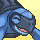
Happy
Original conservé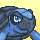
Inspired
À valider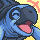
Joyous
À valider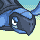
Normal
Original conservé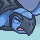
Pain
À valider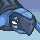
Sad
Original conservé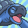
Shouting
Original conservé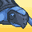
Sigh
À valider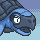
Stunned
À valider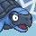
Surprised
Original conservé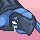
Teary-Eyed
À valider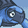
Worried
À valider04 / Ressources manquantes du projet
Périmètre confirmé : la file du projet, pas la création de tous les absents de SpriteCollab. Les dix générations ont été utilisées pour les couronnes. Les tentatives suivantes Zarude et Terapagos Stellaire ont été bloquées par la limite : aucun nouveau sprite n’est annoncé pour eux.
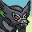
Zarude
Portrait Normal existant, à conserver.
0 émotions requises manquantes.
Sprites : à produire / corriger.
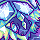
Terapagos / Stellar
Portrait Normal existant, à conserver.
15 émotions requises manquantes.
Sprites : à produire / corriger.
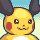
Raichu / Mega_X
Portrait Normal existant, à conserver.
15 émotions requises manquantes.
Sprites : à produire / corriger.
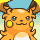
Raichu / Mega_Y
Portrait Normal existant, à conserver.
15 émotions requises manquantes.
Sprites : à produire / corriger.
Les formes Méga-Raichu X/Y ont été retrouvées dans les slots 0026/0002 et 0026/0003 : leurs portraits Normal existent déjà. L’audit du projet recense aussi 46 espèces de base sans sprites ; elles conservent leurs portraits existants.
File détaillée : existants et manquants